Fonction Critique : Commande Cisaille
UMLInteraction
SystemeBord_Aerostat
::
ArchitectureLogiciel_SystemeBord
::
Fonction Critique : Commande Cisaille
::
Fonction Critique : Commande Cisaille
Description
none
Diagrams

CommandeCisaille_SequenceDiagram
Fragments
cable_coupé
Participants
: Modem
Microcontroleur1: Microcontroleur
Microcontroleur2: Microcontroleur
station_sol: Actor
interrupteur1: Interrupteur
interrupteur2: Interrupteur
: Onduleur
: Capteur_cisaille
Messages
Message1 (station_sol→)
Message2 (→Microcontroleur2)
Message3 (Microcontroleur2→interrupteur2)
(interrupteur2→Microcontroleur2)
(Microcontroleur2→)
(→station_sol)
Message4 (station_sol→)
Message5 (→Microcontroleur1)
Message6 (Microcontroleur1→interrupteur1)
(interrupteur1→Microcontroleur1)
(Microcontroleur1→station_sol)
(interrupteur1→Microcontroleur2)
Message7 (Microcontroleur1→)
Message9 (Microcontroleur2→Microcontroleur2)
Message8 (Microcontroleur1→Microcontroleur1)
(Microcontroleur1→)
(→station_sol)
Message10 (→Microcontroleur2)
Message11 (→Microcontroleur1)
(Microcontroleur1→)
(→station_sol)
Message12 (Microcontroleur1→)
Message13 (Microcontroleur2→interrupteur2)
Message14 (Microcontroleur1→interrupteur1)
Properties
Name
Value
name
Fonction Critique : Commande Cisaille
stereotype
null
visibility
public
isReentrant
true
Owned Elements
CommandeCisaille_SequenceDiagram